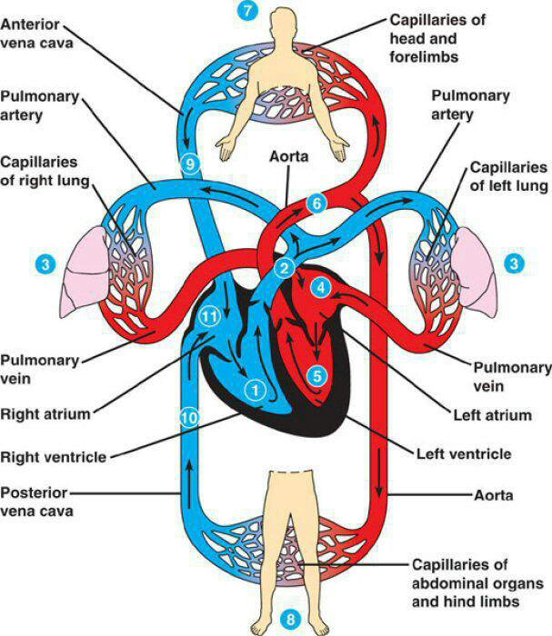

Pulmonary circulation is the part of the circulatory system that carries deoxygenated blood from the heart to the
lungs and returns oxygenated blood back to the heart. It plays a crucial role in ensuring that the blood becomes
oxygen-rich before being pumped to the rest of the body.
Here’s a step-by-step explanation of pulmonary circulation:

Deoxygenated Blood Enters the Heart:
Deoxygenated (oxygen-poor) blood from the body returns to the heart through two large veins: the superior vena
cava (from the upper body) and the inferior vena cava (from the lower body).
This blood flows into the right atrium, the heart's upper-right chamber.
Blood Moves to the Right Ventricle:
When the right atrium contracts, it pushes the deoxygenated blood through the tricuspid valve into the right
ventricle, the lower-right chamber of the heart.
Blood is Pumped to the Lungs:
The right ventricle contracts and pumps the deoxygenated blood through the pulmonary valve into the pulmonary
artery.
The pulmonary artery is the only artery in the body that carries deoxygenated blood. It branches into two
parts,
carrying blood to both lungs.
Gas Exchange in the Lungs:
In the lungs, the blood flows through tiny capillaries surrounding the alveoli (air sacs). Here, carbon
dioxide
(CO₂) is exchanged for oxygen (O₂).
The oxygen-rich blood is now ready to return to the heart.
Oxygenated Blood Returns to the Heart:
Oxygenated (oxygen-rich) blood flows from the lungs back to the heart through the pulmonary veins. These are
the
only veins in the body that carry oxygenated blood.
The blood enters the left atrium, the upper-left chamber of the heart.
Blood Moves to the Left Ventricle:
When the left atrium contracts, it pushes the oxygen-rich blood through the mitral valve into the left
ventricle,
the lower-left chamber of the heart.
Blood is Pumped to the Body:
The left ventricle then contracts and pumps the oxygenated blood through the aortic valve into the aorta,
the largest artery in the body. From there, the blood is distributed throughout the body.
Key Points of Pulmonary Circulation:
Pulmonary artery: Carries deoxygenated blood from the heart to the lungs.
Pulmonary veins: Return oxygenated blood from the lungs to the heart.
Pulmonary circulation ensures that the body receives oxygen-rich blood, while carbon dioxide is removed through
the lungs.